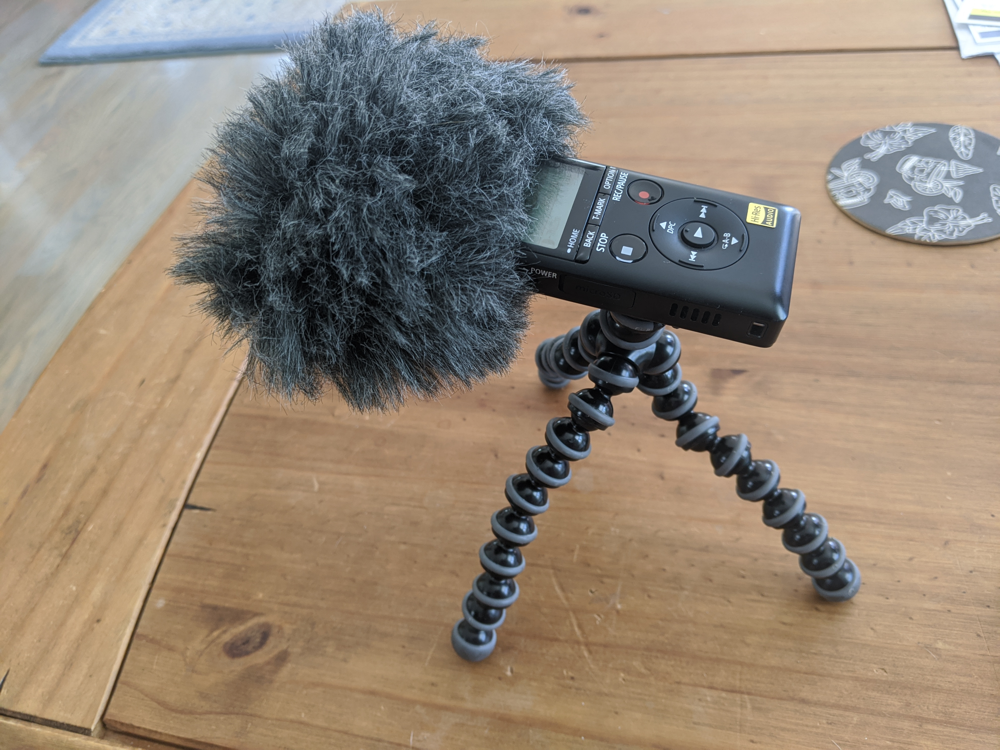
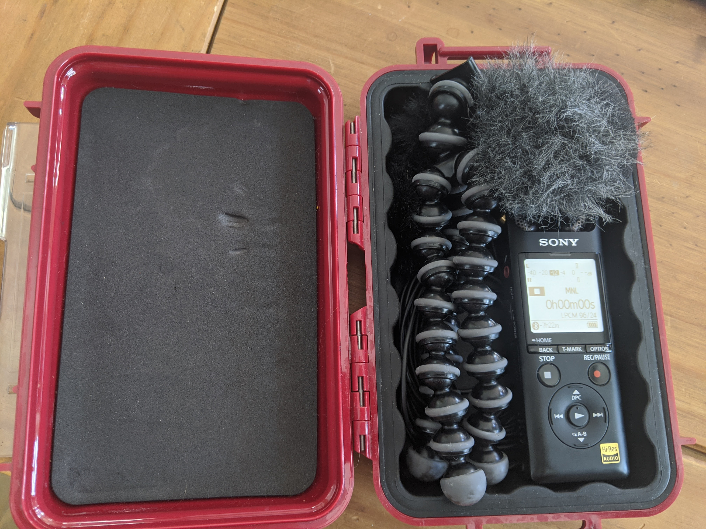
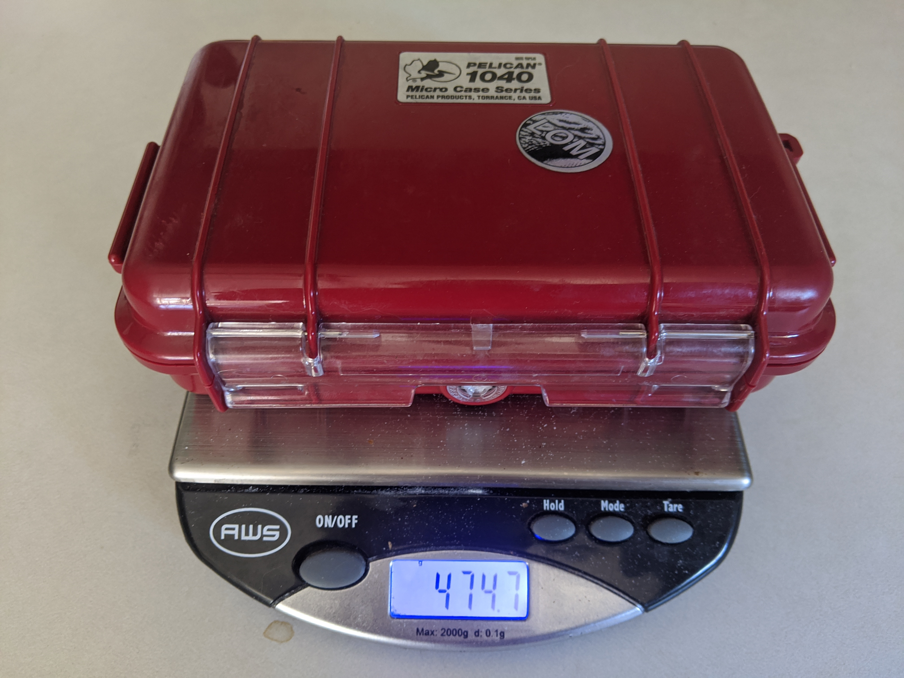

Obviously I wanted something portable, but honestly I wanted something really portable. I’ve heard so many people say “the best recorder is the one you have on you,” which was exactly the problem I wanted to solve with this device. I had a Zoom H4n years ago, and aside from not really liking the way it sounded or the UI, it was just big enough that I never ended up having it on me. I have some microphones and access to a MixPre through work, but due to bulk I only really carry them around if I know I’m setting out to record. As a result, I didn’t need a recorder with XLR input, though being able to plug in a pair of LOM mikroUSI would be a big plus. I wanted something that sounded good of course, but I cared more about size and ease of use.
One of the best resources I found was George Vlad’s Handheld Recorder Review. His review did such a good job of explaining the differences between several of the options I was considering. The biggest thing I had to remind myself while reading his review is that George is a much different recordist than I am (and I mean that in the absolute best way), which I think is why his experience with the A10 has been so different from mine. While George is taking his gear out on lengthy international excursions, often leaving a recorder out for days at a time, I'm just trying to capture the sound of a train as I'm stuck waiting to cross the tracks on a bikeride or some cool wave crashes while I walk on the beach. As a result, some of the negative aspects of his review seemed totally acceptable for my goals.
I really picked the A10 for its size, but here’s a selection of selling points that helped me decide:
- $230. Not the cheapest option, but definitely on the lower end.
- 7+ hr internal memory at Stereo 96/24 PCM
- PIP Mic In
- 3 onboard mic configurations (XY/Straight/Wide)
- Bluetooth + Free App
As soon as it arrived, I felt reassured about the size. It’s much smaller than my Pixel 3 Phone in height and width, and only maybe 3x thicker. I bought a case for it to carry accessories, but I frequently just carry it around in a pocket. I think it sounds good. I know it’s not the best sound out there, but I consistently feel that it captures what I find interesting in a source, which is good enough for me! I’ve used A10 recordings for production assets on many occasions.
It boots up pretty quickly as well, going from pressing power to actively recording in about 3 seconds. I've definitely started rolling just in time on more than one occasion!
I’ve really liked that both charging and transferring is a single USB, no batteries to swap out or SD Cards to remove. I got a generic USB extension cable to plug it in while sitting on my desk so I don't have to worry about it jutting out dangerously from a CPU tower. It has a Micro SD card slot, but I’ve never needed it as I’m rarely recording 7h without getting back to a computer to charge and backup. I will say, the transfer speed when backing up is very slow. I have no idea why, but it takes around 5mins to transfer 1gb of audio.

I figured the Bluetooth functionality and accompanying REC Remote app would be more music oriented and not useful in the field, but I actually think it’s fantastic. It exposes all the functionality I find I need for controlling remotely: start/stop, gain setting, dropping markers, & changing settings. Just last week I setup the A10 next to a bird feeder outside and was able to start/stop and drop markers from inside while watching out the window for bird visitors.
It's really easy to drop markers while recording, but I haven't found a way to access them without using some proprietary Sony app which I have little interest in. I wish it would embed a flag in the wav file itself.
It says you can listen via Bluetooth which I assumed meant you could hear the signal from the app when connected, but I think it just means you can play it back by connecting a Bluetooth speaker or headphones which I've never done.
Lastly, it has some internal processing which I tried out briefly and would advise against. The noise cut made everything unusably thin.
Again someone with different uses in mind might generate a completely different list, but here's my pro/con breakdown.
Pros
- Small
- Turns on fast. Power up to recording in under 3s.
- Single USB port for charging/transfer
- Able to access files from my phone with USB adapter!
- Decent internal mic quality, really great USI quality!
- Markers need to be opened with proprietary app
- Very slow transfer times
- Can’t hear signal via Remote app
- Internal processing is not great

- A10 ($230)
- Rycote Mini Windjammer ($30)
- LOM mikroUSI (Stereo) ($105 + $50 for windbubbles)
- Joby GorillaPod Stand ($15)
- Pelican 1040 Case ($25)

I won't give this any kind of star rating or anything because I think the A10 will be better for some than others, but I will say I use it all the time which is exactly what I wanted from a handheld recorder. If you're looking yourself, good luck! I hope this helps.